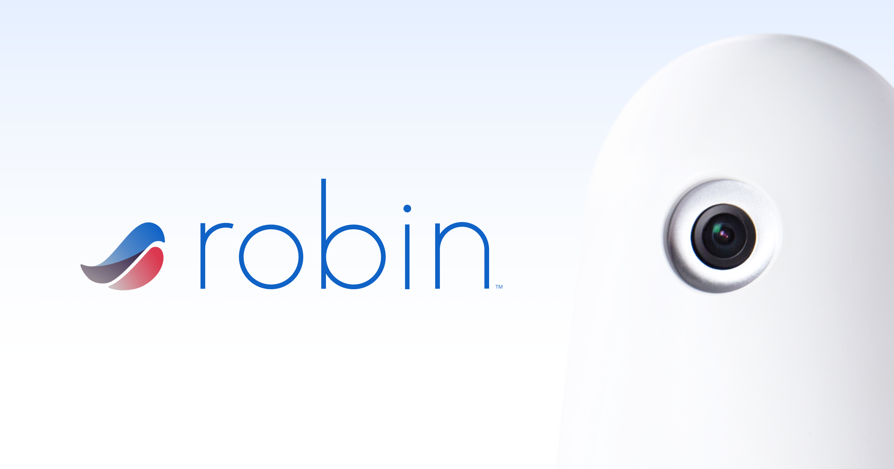

Perimetrics
Full Stack Software Engineer
July 2022 - Present
- Work in agile team with daily stand-ups, adding and debugging features, according to assigned tickets
- Generate slicers for packet selection, improving firmware team's analysis of inbound and outbound data
- Incorporate streams into data transformation, increasing data handling capabilities

Robin Healthcare
Lead Virtual Medical Scribe
October 2019 - June 2020
- Headed groups of 3-4 scribes, chronicling encounters between physicians and patients; organized care data, maximized efficiency, and increased total number of patients seen by physicians
- Transcribed nearly 1000 medical notes, accounting for insurance requirements and provider preferences
- Improved patient-physician relationship, allowing providers to solely focus on patient concerns
